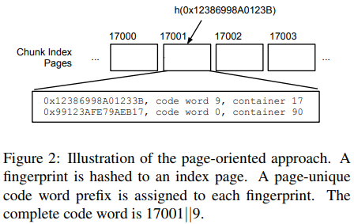

| Venue | Category |
|---|---|
| FAST'13 | Metadata Compression |
File Recipe Compression in Data Deduplication Systems1. SummaryMotivation of this paperFile Recipe CompressionImplementation and Evaluation2. Strength (Contributions of the paper)3. Weakness (Limitations of the paper)4. Future Works
The corresponding file recipe data can occupy a significant fraction of the total disk space.
if the deduplication ratio is very high
This paper proposes a combination of efficient and scalable compression schemes to shrink the file recipes's size.
Chunk index: disk bottleneck file recipes: contains a list of chunk identifiers.
In a standard file system, the block pointer is stored in at most 64 bits.
file recipes that store cryptographic fingerprints have a size of at least 20 bytes
the file recipes grow linearly with the size of the stored logical data.
this decreases the deduplication ratio.
the code word is then stored instead of the fingerprint in the file recipe.
And this paper wants to investigate different approaches to select the code words.
Zero chunk: the chunk completely filled with zeros. zero chunks are common in VM disk images.
It is easy to detect zero chunks and replace them with a special code word by pre-calculating the fingerprint of the chunk filled with zeros.
is not significantly longer than necessary to have a unique code word for each chunk in the system
This approach uses chunk index's pages to assign code words.
code word consists of two parts: prefix and suffix. (page id | unique identifier in page) The combination of suffix and prefix together uniquely identify the fingerprint. prefix: used to identify the index on-disk page where the fingerprint is stored on. suffix: in the on-disk page, it can search the fingerprint entry with the matching suffix.

- assign shorter code words to fingerprints based on the probabilies of the chunk usages.
- the usage of fingerprints is highly skewed, certain fingerprints are more likely than others.
- A small set of common fingerprints gets a short code word.
Assign code words to chunks below a entropy threshold:
E.g., around 0.3% of the chunks Need to maintain (in-memory) reverse index`
The statistical model relies on a fingerprint's usage without looking at its context. (e.g., previous fingerprints in the data stream)
use fingerprint entropy to measure the length of code word.
Issue the entropy of each chunk is not known in advance and can only be estimated after some data has been written.
only assign code words after one or more backups. (The first fingerprints have to be stored unmodified) This paper assumes it is effectively possible to estimate the overall probability of a chunk. (garbage collection)
Based on order-1 statistic Data structure for order-1 too large at scale
Using estimation of most-frequent following fingerprints
This paper mentions it uses the Misra-Gries Algorithms to approximate the detection of frequent fingerprint pairs.
Evaluation: Trace-based simulation of weekly full backup, three datasets
Compression Ratio: Pages-Based and Statistical Prediction Combined compression ratio: four methods
It says the number of references to a chunk (usage count) is often collected for garbage collection purpose. This can make usage count be calculated easily.